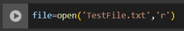
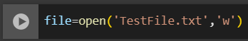
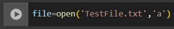
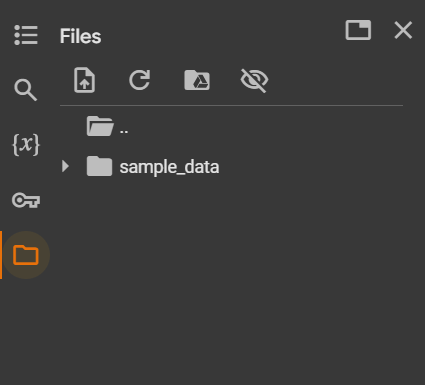
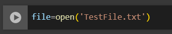
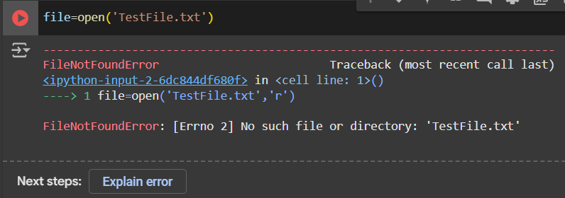
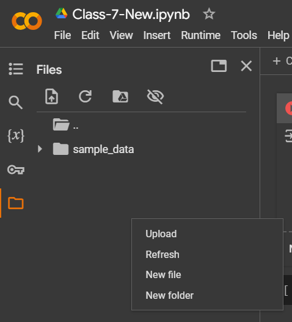
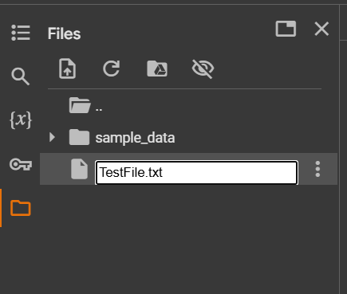
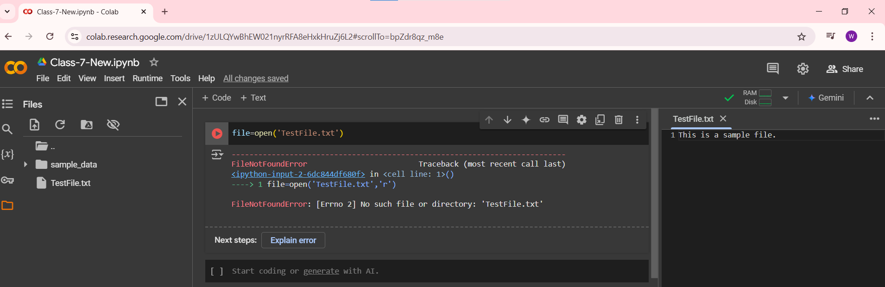
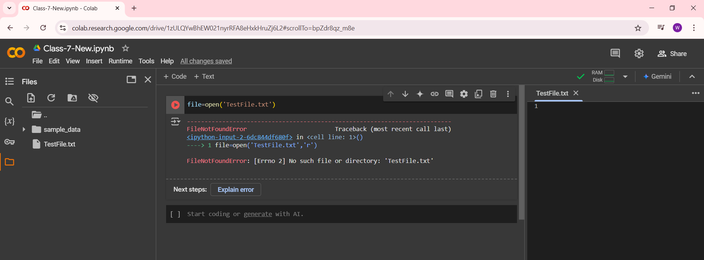

While opening the file, we can specify the mode in which we want to interact with the file like reading, writing, or appending.
Different Modes:
- Read Mode (
'r'): Opens the file for reading only.

- Write Mode (
'w'): Opens the file for writing.It will overwrite existing content if the file exists and if it doesn’t it will create a new file.

- Append Mode (
'a'): Opens the file for appending which means, it allows you to add new content at the end of the file without changing the existing data.

Let’s see what happens when we use the open() function for a file that does not exist.
In Google Colab, you can see all the files by clicking on this folder icon.



- It gives an error since the file named
TestFile.txt does not exist.
Creating a New File:
- To create a file, right-click in the Files area and select the New File option.


If you double-click the file, it will open a new window on the right where you can edit the file.

- Let’s add a line inside the file.

Now, let’s run the same command.